A poluição nos oceanos tem sido um grande problema mundial. Resíduos plásticos, esgoto e poluentes industriais contaminam nossas águas, ameaçando a vida marinha, ecossistemas costeiros e a saúde humana. Somado a isso, faltam dados de qualidade para os algoritmos de centros de pesquisa, além da pouca conscientização da população sobre os problemas hídricos.


 
